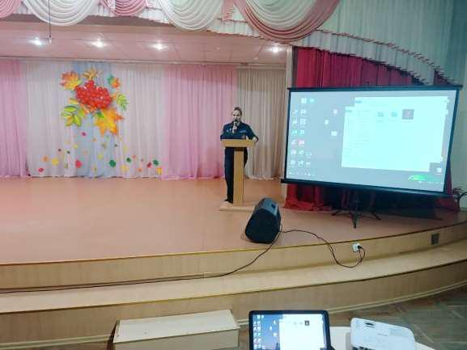
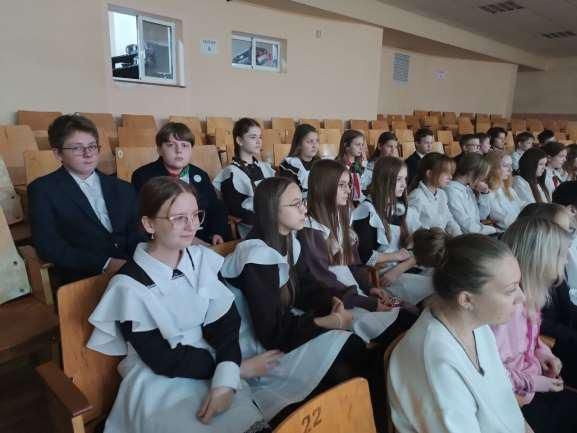
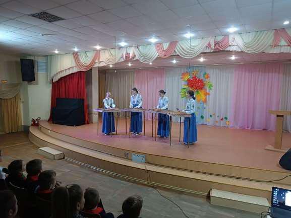
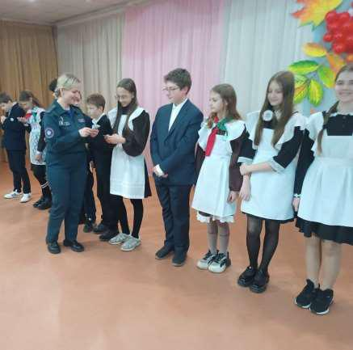
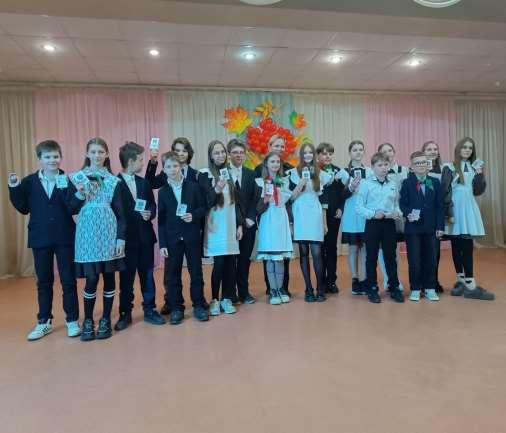
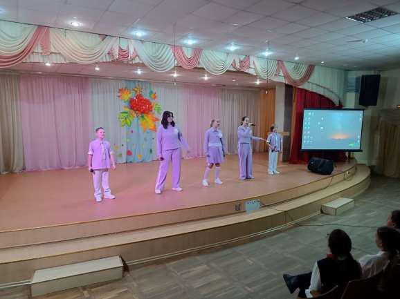

ПОПОЛНИЛИ РЯДЫ БМООСП
15 октября в ГУО «Средняя школа №20 г. Борисова» состоялось торжественное вручение членских билетов Белорусской общественной организации спасателей – пожарных. Ряды организации пополнили 24 учащихся 6 «Г» класса нашей гимназии.

С каждым годом популярность БМООСП растет и пополняется новыми членами. В настоящее время организация насчитывает более 60 тысяч юношей и девушек. Целью организации является гражданское и патриотическое воспитание, обучение безопасности жизнедеятельности подрастающего поколения, популяризация и обучение профессии спасателя-пожарного, привлечение молодежи к обеспечению безопасности жизнедеятельности, защите окружающей среды, раскрытие творческих способностей молодежи, благотворительная деятельность.

Торжественное вручение билетов провела инспектор сектора пропаганды и взаимодействия с общественностью Борисовского ГРОЧС лейтенант внутренней службы Екатерина Рыбчук.

Со знаменательным событием в жизни ребят поздравили творческие коллективы учреждений образования и команда КВН Борисовского района Red Bit.


